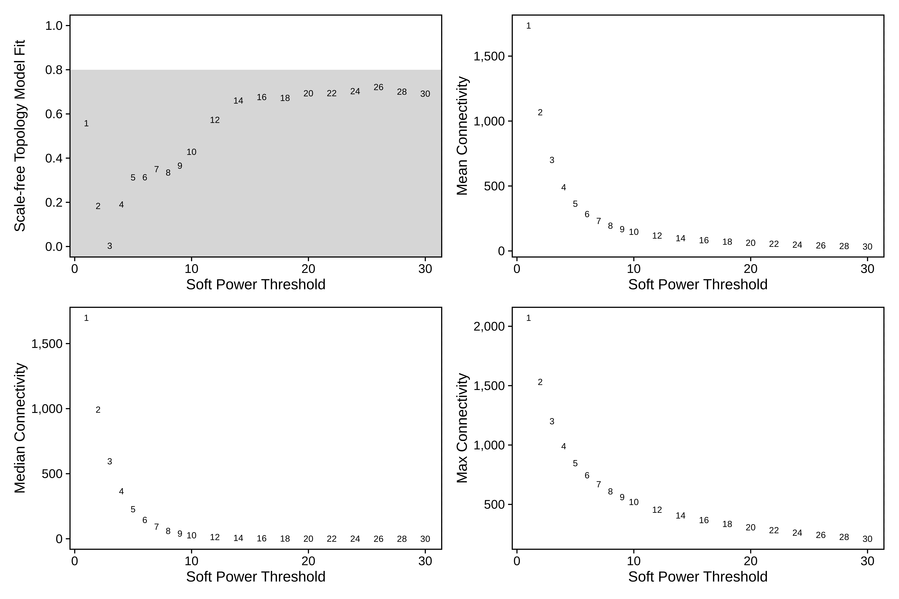
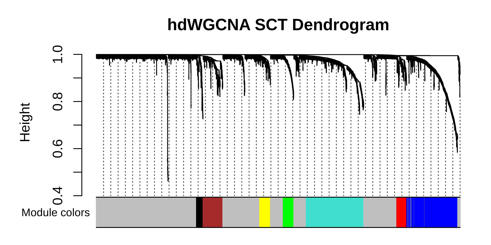
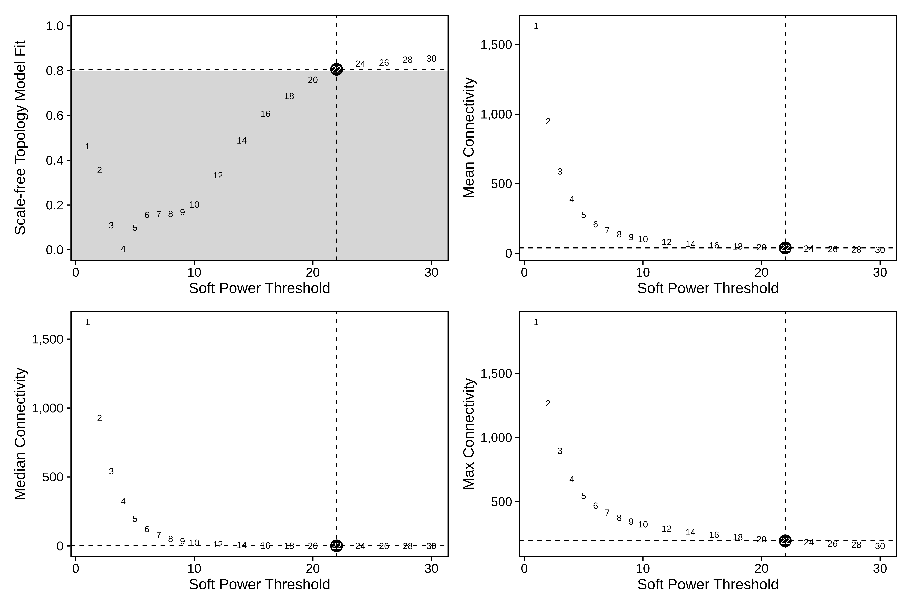
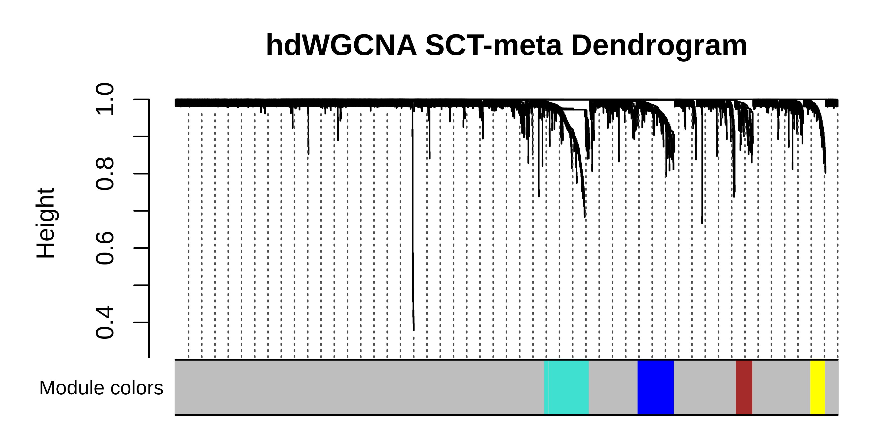
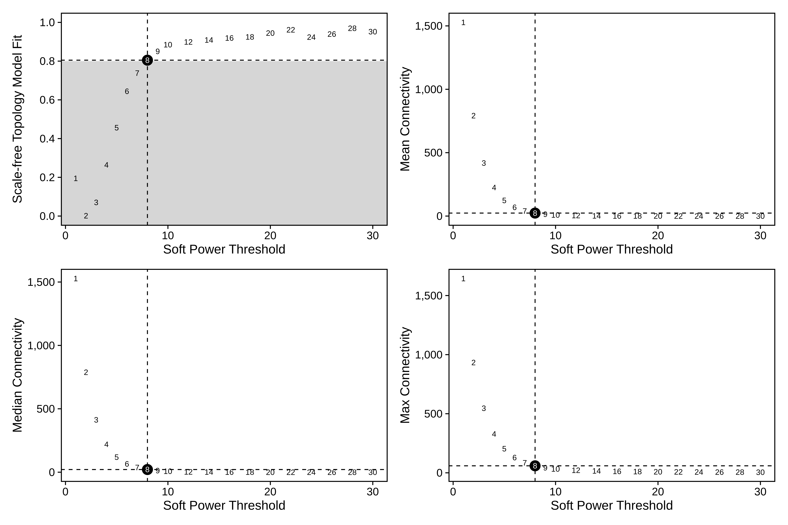
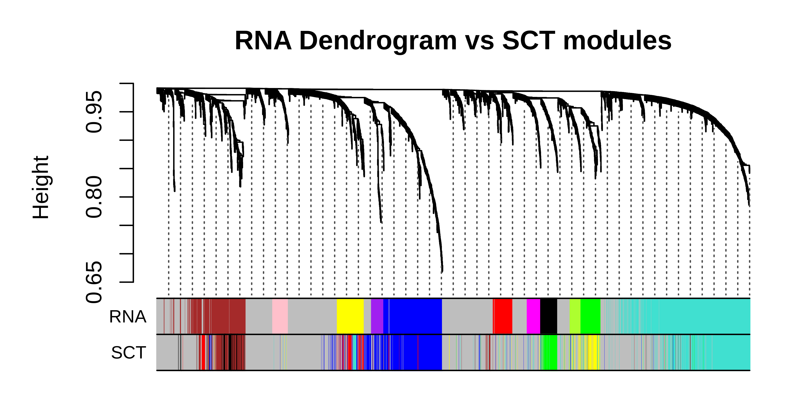

In this tutorial, we briefly cover how to use data normalized with SCTransform for hdWGCNA. Overall we do not recommend using SCTransform with hdWGCNA, however we have included this tutorial due to numerous user requests. This tutorial assumes that you are familiar with the basics of the hdWGCNA workflow. This tutorial also assumes that you are familiar with the SCTransform R package and the SCTransform methods paper. Once again, we do not advise using SCTransform with hdWGCNA so proceed with caution. If you have made it past these warnings, at least make sure you are fully aware of how SCTransform works and the underlying assumptions that it makes about gene expression distributions etc.
First we load the required R libraries.
# single-cell analysis package
library(Seurat)
# sctransform
library(sctransform)
# plotting and data science packages
library(tidyverse)
library(cowplot)
library(patchwork)
# co-expression network analysis packages:
library(WGCNA)
library(hdWGCNA)
# network analysis & visualization package:
library(igraph)
# using the cowplot theme for ggplot
theme_set(theme_cowplot())
# set random seed for reproducibility
set.seed(12345)Download the tutorial dataset:
wget https://swaruplab.bio.uci.edu/public_data/Zhou_2020.rdsRun SCTransform
Here we run SCTransform normalization on the tutorial dataset, regressing percent.mt.
# load the tutorial dataset
seurat_obj <- readRDS('data/Zhou_control.rds')
# subset just one cell type for the sake of speed
seurat_subset <- seurat_obj %>% subset(cell_type == 'ASC')
# compute percentage mitochondrial genes
seurat_subset <- PercentageFeatureSet(seurat_subset, pattern = "^MT-", col.name = "percent.mt")
# run SCTransform
seurat_subset <- SCTransform(seurat_subset, vars.to.regress = "percent.mt", verbose = FALSE)It is important to note that SCTransform pearson residuals are typically only output for the highly variable features. We can check this by extracting the expression matrix.
# extract sct expression data
sct_data <- GetAssayData(seurat_subset, slot='scale.data', assay='SCT')
# print the shape of this matrix (genes by cells)
print(dim(sct_data))[1] 3000 3162[1] 36601 3162We see that seurat_obj has 36,601 genes, but only 3,000 are in the SCTransform scale.data slot. Therefore, if we want to use hdWGCNA on the SCTransform pearson residuals, we must only include the highly variable genes. Alternatively, SCTransform does output a counts and normalized data slot which may also be used.
Option 1: SCTransform on single-cell data
Here we demonstrate how to run the standard hdWGCNA workflow on SCTransform normalized single-cell data. First we set up the hdWGCNA experiment, ensuring to only include genes that were used for SCTransform.
# only supply features that were used for SCTransform!!!
seurat_subset <- SetupForWGCNA(
seurat_subset,
features = VariableFeatures(seurat_subset),
wgcna_name = "SCT"
)Next, we construct metacells while specifying slot='scale.data' and assay='SCT' in order to use the SCTransform normalized data.
seurat_subset <- MetacellsByGroups(
seurat_obj = seurat_subset,
group.by = c("Sample"),
k = 25,
max_shared=12,
min_cells = 50,
reduction = 'harmony',
ident.group = 'Sample',
slot = 'scale.data',
assay = 'SCT'
)Next, we run the rest of the main steps of the hdWGCNA pipeline.
# set expression matrix for hdWGCNA
seurat_subset <- SetDatExpr(seurat_subset)
# test different soft power thresholds
seurat_subset <- TestSoftPowers(seurat_subset)
plot_list <- PlotSoftPowers(seurat_subset)
print(wrap_plots(plot_list, ncol=2))
Interestingly, none of the soft power thresholds tested have a scale-free topology moddel fit of 0.8 or higher. For network construction, we will choose soft_power=14 since that is where the model fit starts to plateau.
seurat_subset <- ConstructNetwork(
seurat_subset,
soft_power = 14,
tom_name = "SCT_cells",
overwrite_tom = TRUE
)
# compute module eigengenes and connectivity
seurat_subset <- ModuleEigengenes(seurat_subset)
seurat_subset <- ModuleConnectivity(seurat_subset)
# plot the dendrogram
PlotDendrogram(seurat_subset, main='hdWGCNA SCT Dendrogram')
Option 2: SCTransform on metacell data
Alternatively, we can apply SCTransform after we have constructed metacells.
seurat_subset <- SetupForWGCNA(
seurat_subset,
features = GetWGCNAGenes(seurat_subset, 'SCT'),
wgcna_name = "SCT_meta"
)
seurat_subset <- MetacellsByGroups(
seurat_obj = seurat_subset,
group.by = c("Sample"),
k = 25,
max_shared=12,
min_cells = 50,
reduction = 'harmony',
ident.group = 'Sample',
slot = 'counts',
assay = 'RNA'
)Here, we extract the metacell Seurat object, then run SCTransform on it. Importantly, this will give us a different set of genes than we used previously.
# get metacell object and run SCTransform
mobj <- GetMetacellObject(seurat_subset)
mobj <- PercentageFeatureSet(mobj, pattern = "^MT-", col.name = "percent.mt")
# run SCTransform
mobj <- SCTransform(mobj, vars.to.regress = "percent.mt", verbose = FALSE, return.only.var.genes=FALSE)
# only keep genes that were used for SCTransform
sct_data <- GetAssayData(mobj, slot='scale.data', assay='SCT')
sct_genes <- rownames(sct_data)
gene_list <- GetWGCNAGenes(seurat_subset)
gene_list <- gene_list[gene_list %in% sct_genes]
# update the genes used for WGCNA, and reset the metacell object
seurat_subset <- SetWGCNAGenes(seurat_subset, gene_list)
seurat_subset <- SetMetacellObject(seurat_subset, mobj)Next we continue with the hdWGCNA pipeline using this metacell object.
# specify SCT assay and scale.data slot
seurat_subset <- SetDatExpr(seurat_subset, assay = 'SCT', slot='scale.data')
seurat_subset <- TestSoftPowers(seurat_subset)
plot_list <- PlotSoftPowers(seurat_subset)
# assemble with patchwork
print(wrap_plots(plot_list, ncol=2))
# construct wgcna network:
seurat_subset <- ConstructNetwork(
seurat_subset,
tom_name = "SCT_meta",
overwrite_tom = TRUE
)
seurat_subset <- ModuleEigengenes(seurat_subset)
seurat_subset <- ModuleConnectivity(seurat_subset)
PlotDendrogram(seurat_subset, main='hdWGCNA SCT-meta Dendrogram')
Comparing to the standard hdWGCNA workflow
Here, we run the standard hdWGCNA workflow without SCTransform so we can make comparisons later. Note that we are using the same set of genes that we did above when using SCTransform.
Show standard hdWGCNA
# set default assay to RNA so we don't use SCTransform data
DefaultAssay(seurat_subset) <- 'RNA'
# setup hdWGCNA experiment
seurat_subset <- SetupForWGCNA(
seurat_subset,
features = GetWGCNAGenes(seurat_subset, 'SCT'),
wgcna_name = "RNA"
)
# construct metacells
seurat_subset <- MetacellsByGroups(
seurat_obj = seurat_subset,
group.by = c("Sample"),
k = 25,
max_shared=12,
min_cells = 50,
reduction = 'harmony',
ident.group = 'Sample',
slot = 'counts',
assay = 'RNA'
)
seurat_subset <- NormalizeMetacells(seurat_subset)
seurat_subset <- SetDatExpr(seurat_subset)
seurat_subset <- TestSoftPowers(seurat_subset)
plot_list <- PlotSoftPowers(seurat_subset)
# plot softpowers
print(wrap_plots(plot_list, ncol=2))
# construct wgcna network:
seurat_subset <- ConstructNetwork(
seurat_subset,
tom_name = "RNA",
overwrite_tom = TRUE
)
seurat_subset <- ModuleEigengenes(seurat_subset)
seurat_subset <- ModuleConnectivity(seurat_subset)
PlotDendrogram(seurat_subset, main='hdWGCNA RNA Dendrogram')
Now we can plot the modules from the RNA under the modules from SCT to compare.
# get both sets of modules
m1 <- GetModules(seurat_subset, 'SCT')
m2 <- GetModules(seurat_subset, 'RNA')
# get consensus dendrogram
net <- GetNetworkData(seurat_subset, wgcna_name="SCT")
dendro <- net$dendrograms[[1]]
# get the gene and module color for consensus
m2_genes <- m2$gene_name
m2_colors <- m2$color
names(m2_colors) <- m2_genes
# get the gene and module color for standard
genes <- m1$gene_name
colors <- m1$color
names(colors) <- genes
# re-order the genes to match the consensus genes
colors <- colors[m2_genes]
# set up dataframe for plotting
color_df <- data.frame(
SCT = colors,
RNA = m2_colors
)
# plot dendrogram using WGCNA function
WGCNA::plotDendroAndColors(
net$dendrograms[[1]],
color_df,
groupLabels=colnames(color_df),
dendroLabels = FALSE, hang = 0.03, addGuide = TRUE, guideHang = 0.05,
main = "SCT Dendrogram vs RNA modules",
)
# get both sets of modules
m1 <- GetModules(seurat_subset, 'RNA')
m2 <- GetModules(seurat_subset, 'SCT')
# get consensus dendrogram
net <- GetNetworkData(seurat_subset, wgcna_name="RNA")
dendro <- net$dendrograms[[1]]
# get the gene and module color for consensus
m2_genes <- m2$gene_name
m2_colors <- m2$color
names(m2_colors) <- m2_genes
# get the gene and module color for standard
genes <- m1$gene_name
colors <- m1$color
names(colors) <- genes
# re-order the genes to match the consensus genes
colors <- colors[m2_genes]
# set up dataframe for plotting
color_df <- data.frame(
RNA = colors,
SCT = m2_colors
)
# plot dendrogram using WGCNA function
WGCNA::plotDendroAndColors(
net$dendrograms[[1]],
color_df,
groupLabels=colnames(color_df),
dendroLabels = FALSE, hang = 0.03, addGuide = TRUE, guideHang = 0.05,
main = "RNA Dendrogram vs SCT modules",
)